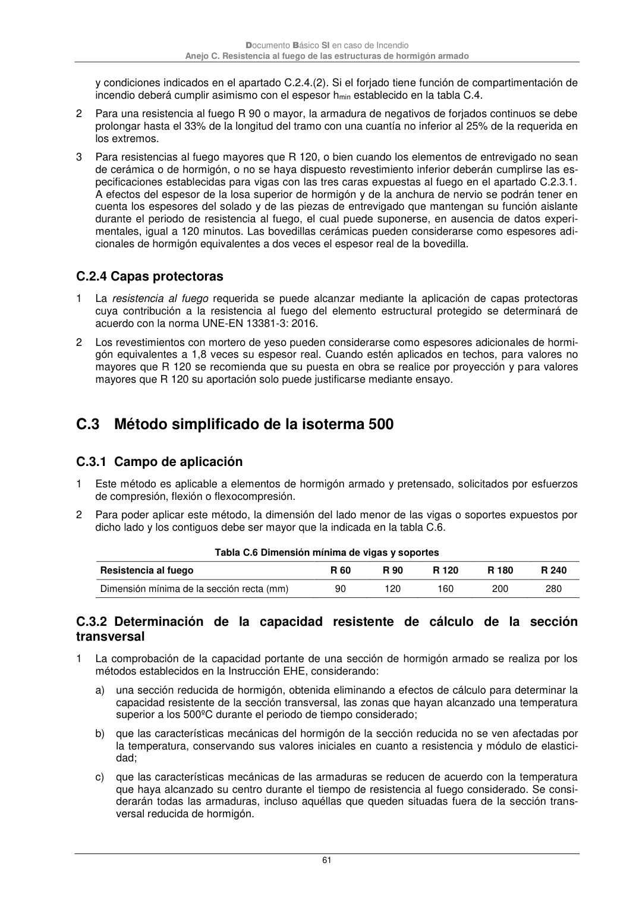
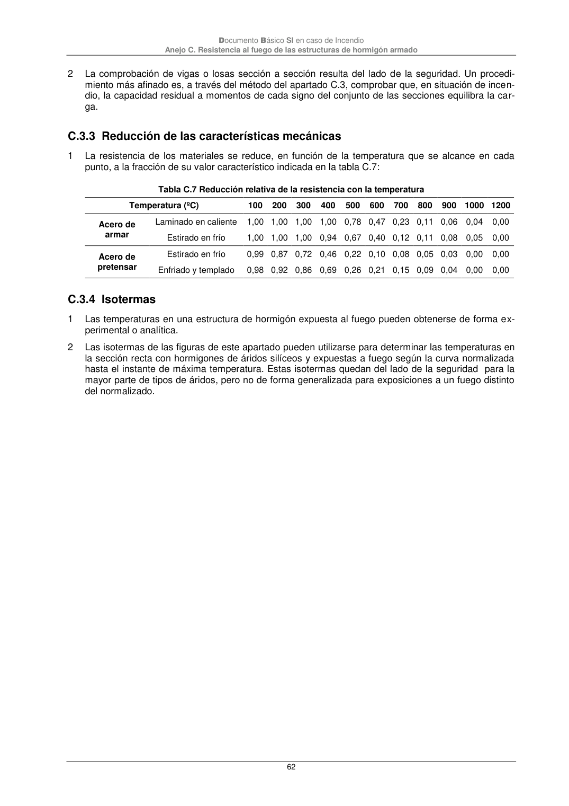

DB-SI · C.3.2 Determinación de la capacidad resistente de cálculo de la sección transversal · versión 2025-03-04 · capa oficial
Formatos: JSON compacto · Markdown · PDF fuente
Ámbito del documento · texto del ámbito · documento y tablas
ID técnico a0168 · PDF pág. 61-62 · jerarquía no validada por persona · contrastado con el literal de la página 61 (marcador PDF); no validado por persona · padre: a0167
C.3.2 Determinación de la capacidad resistente de cálculo de la sección transversal transversal 1 La comprobación de la capacidad portante de una sección de hormigón armado se realiza por los métodos establecidos en la Instrucción EHE, considerando: a) una sección reducida de hormigón, obtenida eliminando a efectos de cálculo para determinar la capacidad resistente de la sección transversal, las zonas que hayan alcanzado una temperatura superior a los 500ºC durante el periodo de tiempo considerado; b) que las características mecánicas del hormigón de la sección reducida no se ven afectadas por la temperatura, conservando sus valores iniciales en cuanto a resistencia y módulo de elastici- dad; c) que las características mecánicas de las armaduras se reducen de acuerdo con la temperatura que haya alcanzado su centro durante el tiempo de resistencia al fuego considerado. Se consi- derarán todas las armaduras, incluso aquéllas que queden situadas fuera de la sección trans- versal reducida de hormigón. Documento Básico SI en caso de Incendio Anejo C. Resistencia al fuego de las estructuras de hormigón armado 62 2 La comprobación de vigas o losas sección a sección resulta del lado de la seguridad. Un procedi- miento más afinado es, a través del método del apartado C.3, comprobar que, en situación de incen- dio, la capacidad residual a momentos de cada signo del conjunto de las secciones equilibra la car- ga.


PDF fuente redistribuible: copia fiel enlazada en esta página (SHA256 verificado).